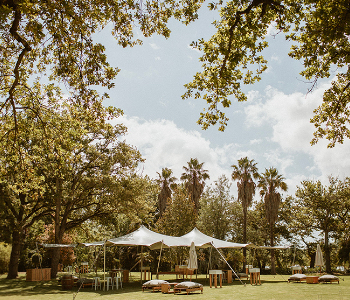
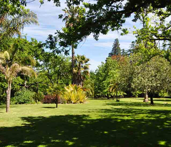
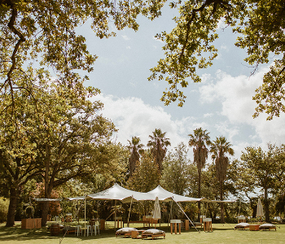
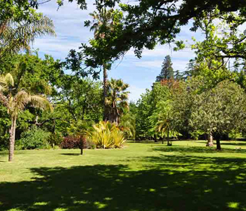

Nooitgedacht
Nooitgedacht is a family-owned historical Cape Dutch wine estate in Stellenbosch with a homestead and outbuildings that date back to 1774. The wedding will take place in its original cellar, as well as on the lawns shaded by century-old oak trees. For more information about Nooitgedacht, visit their website here.
 


